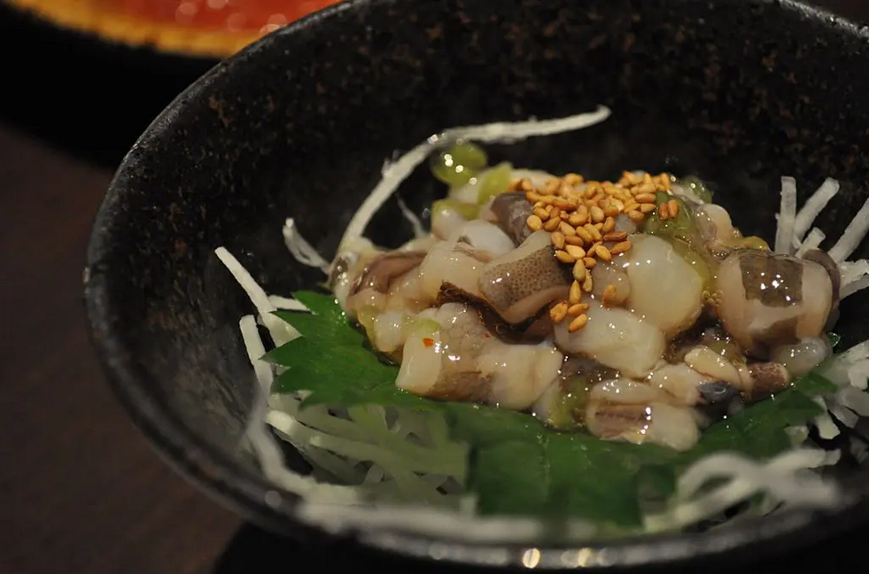

takowasa

Raw octopus mixed with wasabi.
ingredients
- 200g boiled octopus slices,
- 2 tbsp wasabi soy sauce,
- 1 tsp mirin,
- 1/2 tsp sugar,
- chopped green onions.
instructions
- Mix wasabi, soy sauce, mirin, and sugar in a bowl.
- Add octopus slices and mix well to coat.
- Garnish with chopped green onions before serving.